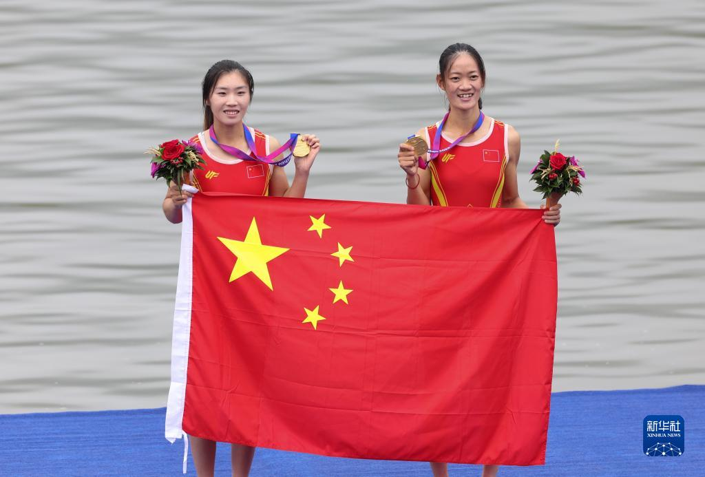
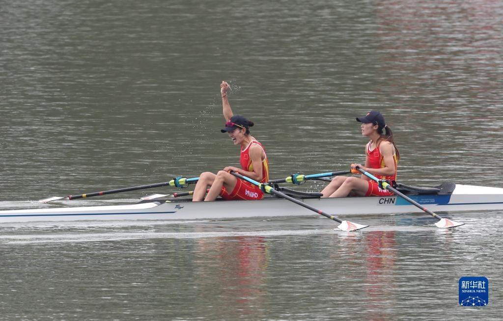
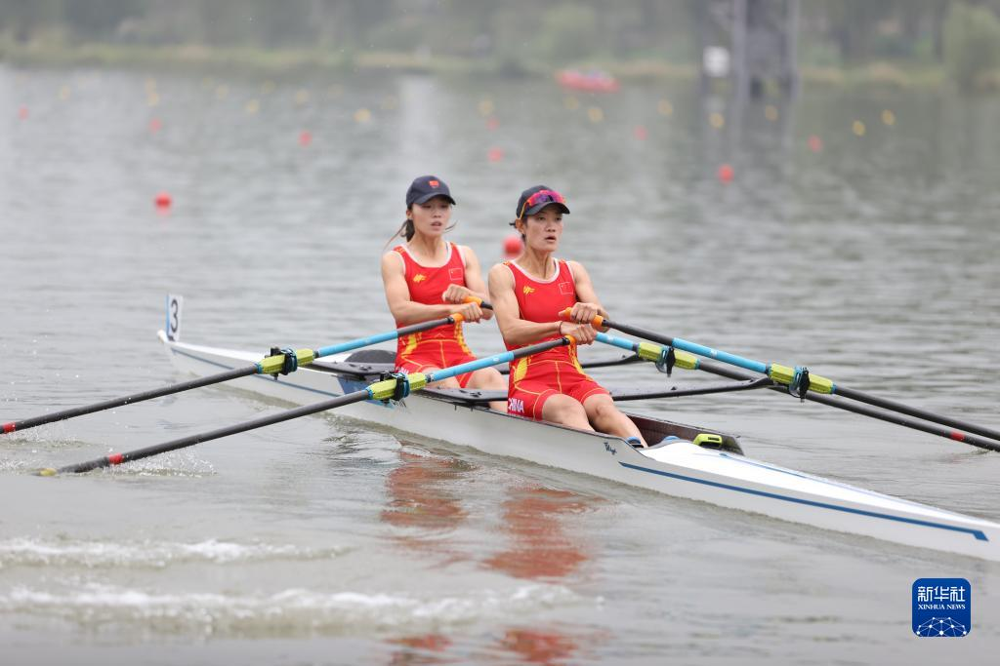
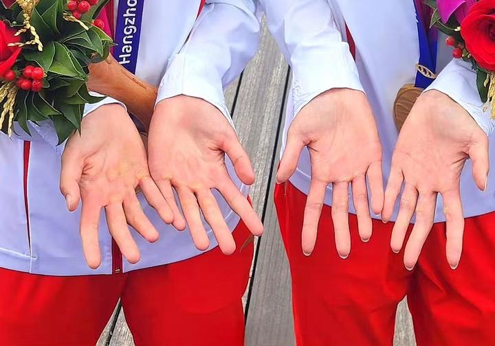

<
>
中国赛艇选手邹佳琪/邱秀萍摘得杭州亚运会首金
杭州9月24日上午，在杭州富阳水上运动中心举行的赛艇女子轻量级双人双桨比赛，产生了杭州亚运会的首枚金牌。中国队选手邹佳琪/邱秀萍获得冠军，成绩为7分06秒78。
乌兹别克斯坦选手伊斯洛莫娃/塔格马托娃获得亚军，成绩是7分16秒49。印度尼西亚选手科尔普蒂/普特里以7分17秒64获得季军。
杭州富阳水上运动中心位于富春江北支江南岸。600多年前，元代画家黄公望隐居富春江畔，在青山秀水间留下传世名画《富春山居图》。时光流转，山水图卷中摇橹垂钓的江面，如今成为运动健儿劈波斩浪的赛场，见证了杭州亚运会首金的诞生。
邹佳琪/邱秀萍以预赛第一的成绩闯入决赛。决赛中，她们出发后一路领先，500米过后已领先第二名2秒以上。随着邹佳琪/邱秀萍率先划入观众视野，岸边顿时响起热烈的欢呼声，两人加速冲向终点，以领先第二名9秒71的成绩夺冠。
从冲过终点，到参加颁奖仪式，又到赛后新闻发布会，邹佳琪和邱秀萍脸上的笑容就没有消失过。
“我是喝富春江水长大的，在富春江上拿金牌，我非常激动。”来自杭州市桐庐县的邹佳琪说，“这是我第一次参加亚运会，能获得首枚金牌很开心。感谢家人和乡亲们的支持。”赛后，邹佳琪蹦蹦跳跳地经过混合采访区，脚步如心情一般轻快。
“邹佳琪你是最棒的！”看到中国队率先撞线，现场观赛的邹佳琪父亲邹来云激动地说。她的妈妈刘丽娜则眼眶微红，一度哽咽到说不出话：“今天真的非常紧张，能拿到这块金牌，也是女儿一路走来最大的回报。”
邹佳琪的爸爸在接受采访时说道：“看到这张照片，心痛，真的很心痛。没有哪个小姑娘的手会这样。这全部是硬茧。老茧掉了，新茧又出来了。全部是血泡。这几块金牌真是用血汗换来的。所以我说你一定要坚强，想要取得好的成绩，你只有比人家更刻苦。
一大早守着电视直播的武汉体育学院竞技体育学院院长徐伟宏，看到学生邹佳琪和邱秀萍摘得亚运会首金，开心地为她们鼓掌。“赛艇是主打体能的项目，她们俩都非常能吃苦。但光是苦练是出不了成绩的，还得动脑筋，加上巧练。”徐伟宏说，邱秀萍和邹佳琪平时训练既刻苦又善于动脑筋，取得好成绩实至名归，也是体教融合的最好体现。
在不久前举行的2023年赛艇世锦赛上，邹佳琪和邱秀萍获得女子轻量级双人双桨项目的巴黎奥运会参赛资格。展望奥运会，这对赛艇“姐妹花”有了新的目标。
邱秀萍说：“这次比赛让我们建立了更大的信心，走下领奖台，就一切归零，我们会更加努力去训练，去备战，走向巴黎奥运会最高领奖台是我们的终极目标。”